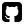

Gabriele Pereira
UX/UI Designer e estudante de Análise e Desenvolvimento de Sistemas
Como Designer de Experiência do Usuário voluntária na ONG Soul Bilíngue, tenho o privilégio de combinar minha paixão pelo design com o compromisso pela educação. Enquanto aluna do projeto Elas Na Tech, uma iniciativa promovida pela JA Brasil, sou beneficiária de um projeto educativo. Como ser humano, defensora ardente da disseminação do conhecimento acessível a todos.
ㅤ